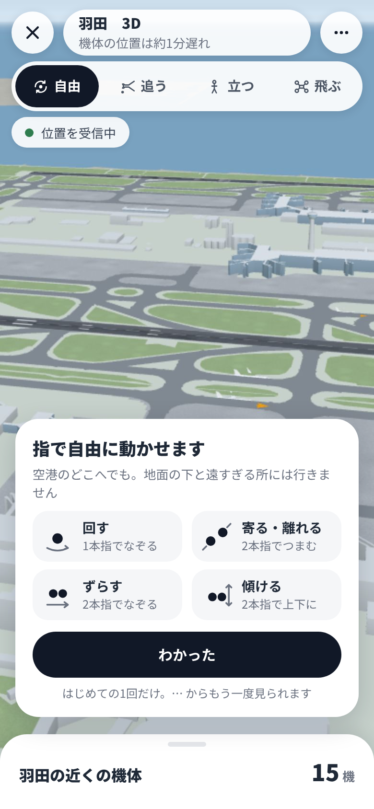
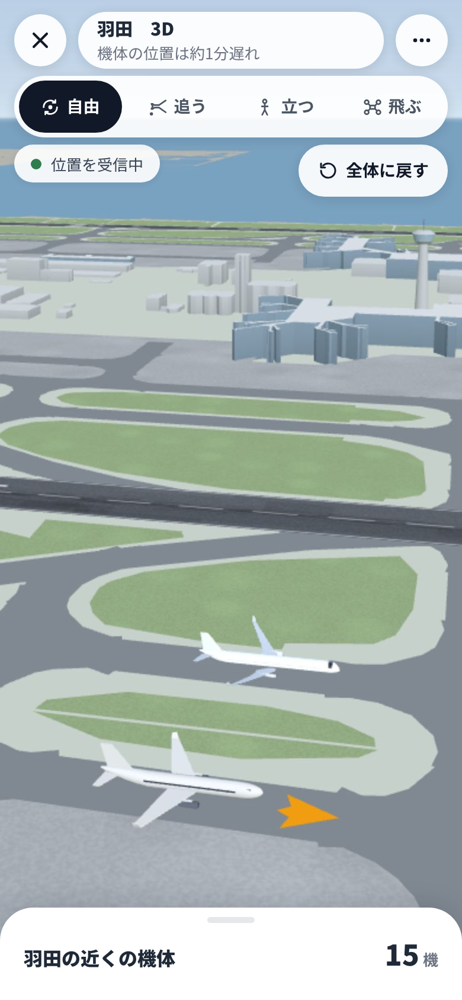
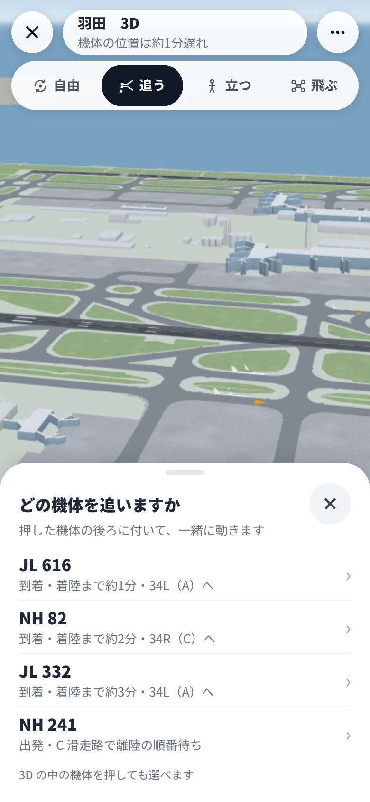
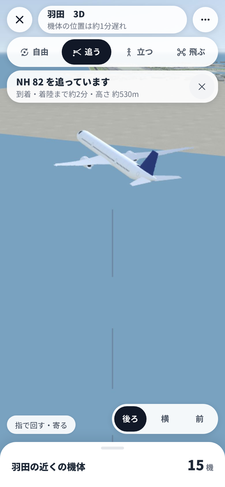
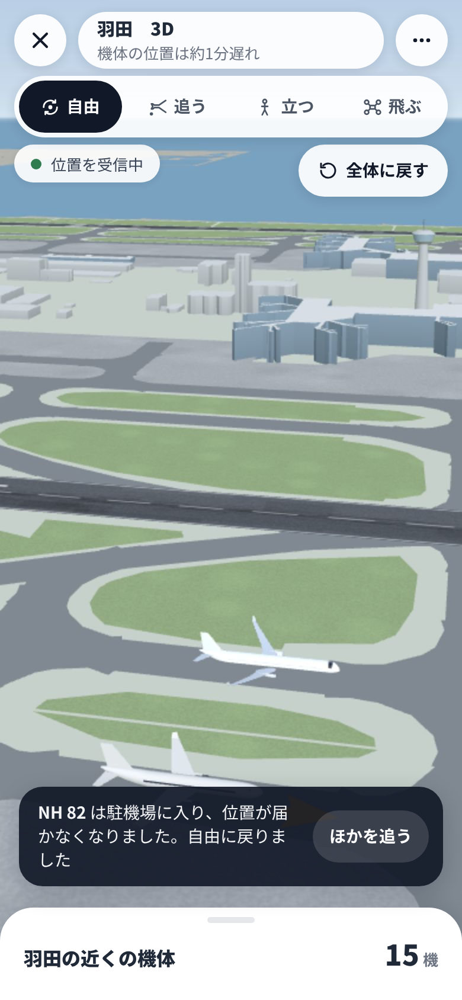
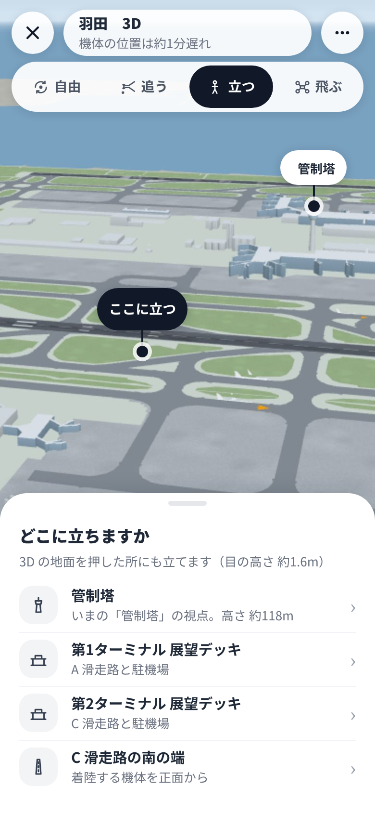
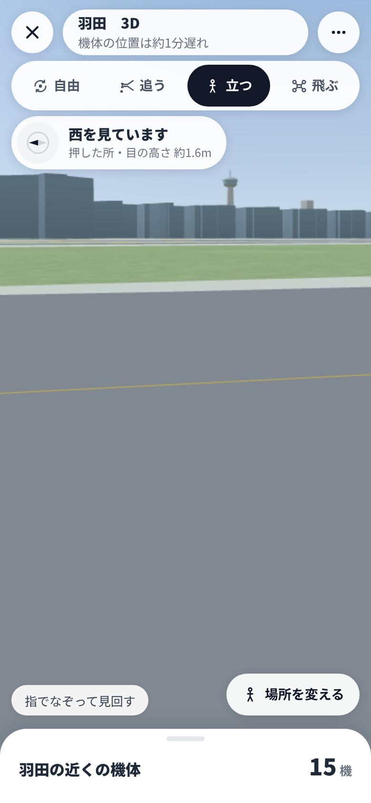
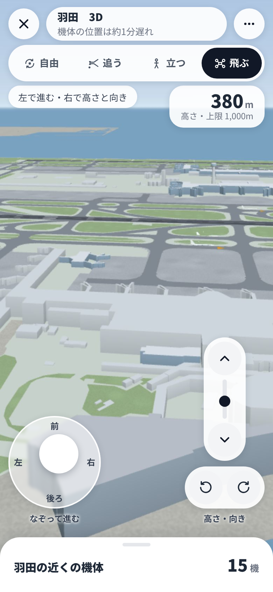
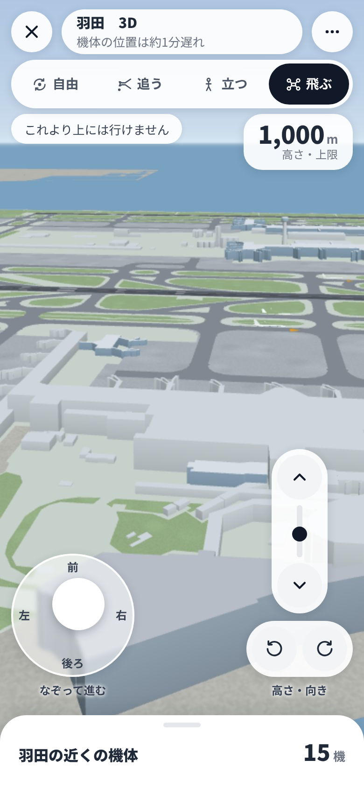

本人が選んだ4つの見方（自由・追う・立つ・飛ぶ）の入れ方。案は2つ。背景は今の羽田の3D（main の web/・デモ）を昼にして撮ったもの。どの画面も390×844 と 375×667 で、12px 未満の字・44px 未満の押す所・はみ出し・字の切れは 0。
| 見方 | 1本指 | 2本指 | ほか |
|---|---|---|---|
| 自由 | なぞって回す | つまんで寄る・離れる／なぞってずらす／上下で傾ける | 地面の下・空港から遠すぎる所には行かない |
| 追う | なぞって角度 | つまんで距離 | 付く位置 後ろ・横・前。機体が消えたら自由へ |
| 立つ | なぞって見回す | つまんでズーム（目の位置は動かない） | 地面を押すとそこに立つ（約1.6m） |
| 飛ぶ | 左のつまみで前後左右 | — | 右のボタンで上下・向き。高さ 1,000m まで |
「閉じる」（左上の ×）はどの見方でもいつも押せる。はじめての案内は「自由」で1回だけ、ほかの見方ははじめて開いたときに上の札の1行だけ。

A1 自由・はじめての1回開いたら「自由」。はじめての人にだけ指の動き4つのカード
A2 自由・寄ったところ動かしたら右上に「全体に戻す」（今の「全体」の位置へ）
A3a 追う・機体を選ぶ機体が決まっていないときは、近くの機体のシートから選ぶ
A3 追う機体の後ろに付いて動く。付く位置は後ろ・横・前、指で角度と距離
A3b 機体が消えた位置が届かなくなったら自由に戻し、下に一言と「ほかを追う」
A4 立つ・場所を選ぶ先頭に「管制塔」（今の視点）、展望デッキ・滑走路の端。地面を押した所にも
A5 立つ目の高さ 約1.6m。向きの札と「場所を変える」
A6 飛ぶ左のつまみで進む、右で上下と向き。高さを大きな数字で
A6b 飛ぶ・上限1,000m で止まり「これより上には行けません」